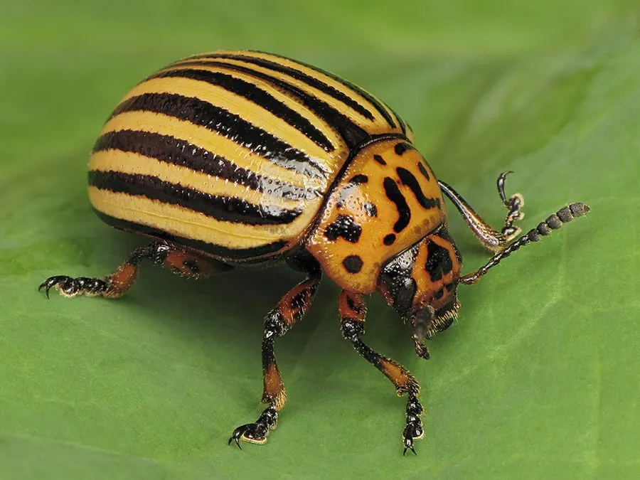

昆虫 · 动物界
马铃薯甲虫 Leptinotarsa decemlineata

鞘翅黄底上有十条黑纵纹的叶甲，幼虫红色，专食马铃薯等茄科植物，是世界著名的入侵性农业害虫。
- 分类
- 门节肢动物门纲昆虫纲目鞘翅目科叶甲科属马铃薯叶甲属
- 栖息环境
- 马铃薯田及茄科植物附近，越冬于土中
- 地理分布
- 原产北美，现分布于北美、欧洲、中亚和中国新疆等地
- 保护级别
- 无保护问题；为国际检疫性害虫，中国列为重点检疫对象
物种志
马铃薯甲虫的体长约一厘米，体形椭圆而隆起，前胸背板橙黄色，上面有十一个黑斑，鞘翅橙黄至淡黄色，每一鞘翅上有五条粗大的黑色纵纹，合起来共十条，十星叶甲之名由此而来。它的幼虫体呈砖红色，腹部肥大，背部拱起，取食时紧贴叶面，老熟后钻入土中化蛹。成虫越冬于土中，春季出土后取食并产卵。
它原产北美洲，十九世纪随马铃薯种植扩散到欧洲，后又传入亚洲，现分布于北美、欧洲、中亚和中国新疆等地，栖息在马铃薯田及茄科植物附近，成虫和幼虫都取食叶片，严重时能把整片田的叶子吃光，造成大幅减产。它一年发生一至三代，以成虫在土中越冬，传播主要靠带虫的种薯和运输工具。它是国际检疫性害虫，中国将其列为重点检疫对象，防治以检疫、轮作和药剂为主。
形态与习性
- 体长约一厘米，椭圆而隆起
- 鞘翅橙黄底上有十条粗大黑色纵纹
- 幼虫砖红色，腹部肥大，紧贴叶面取食
- 食性成虫和幼虫都取食马铃薯等茄科叶片
- 危害严重时吃光整片田的叶子，造成大幅减产
- 发生世代一年一至三代，以成虫在土中越冬
趣味知识
- 它鞘翅上十条黑纹像画上去的，是最容易辨认的甲虫之一。
- 幼虫红得像一小团砖块，趴在叶背上拼命啃食。
- 它随着种薯和运输工具跨洲扩散，至今仍是各国的检疫重点。